22 Installation und Aktualisierung von R und RStudio
R ist eine Statistiksoftware, die mittlerweile weit verbreitet ist - sowohl in der Forschung als auch in der Wirtschaft. R ist kostenlos, für alle gängigen Betriebssysteme verfügbar (Windows, Max OS X und Linux) und darüber hinaus auch noch open-source. Das heißt, um R zu nutzen, muss man keine teure Lizenz kaufen und jede/r kann sich an der (Weiter-)Entwicklung des Programms oder einzelner Pakete beteiligen. Durch die weite Verbreitung von R finden sich außerdem ausführliche Anleitungen im Internet, sollten wir mal nicht mehr weiter wissen.
R selbst ist relativ spartanisch und die meisten AnwenderInnen nutzen daher die Entwicklungsumgebung RStudio, welche auch eine umfassendere Benutzeroberfläche besitzt. Mit dieser können wir z.B. Skripte nutzen, in denen wir unsere Analysen speichern können. Außerdem gibt es ein Environment, das uns anzeigt, welche Objekte in R vorhanden sind (d.h. die wir eingelesen oder direkt in R erstellt haben). Hier finden wir zusätzlich einen Reiter Help, welcher uns Informationen und Anwendungshinweise zu Funktionen gibt.
Im vorliegenden Kapitel schauen wir uns jeweils für Windows und Mac an, wie wir R und RStudio installieren oder auf eine neuere Version aktualisieren und dabei unsere bisher heruntergeladenen Pakete behalten können.
Was ist mit Linux?
Bevor wir die R-Lernplattform ins Leben gerufen haben, haben wir eine Umfrage durchgeführt, in der u.a. das Betriebssystem der NutzerInnen erfragt wurde. Hierbei hat nur ein Bruchteil der Personen angegeben, mit Linux bzw. Ubuntu zu arbeiten. Aufgrund der geringen Nachfrage gibt es kein gesondertes Kapitel für Linux-UserInnen. Im Folgenden sind einige Links zur Hilfe aufgeführt.
Für die Installation von R und RStudio unter Ubuntu empfiehlt sich die Installationsanleitung auf linuxhunt.com zu nutzen (englisch). Anstatt wget https://download1.rstudio.org/rstudio-0.99.896-amd64.deb ändern wir den Link zur gewünschten RStudio Version für unser Betriebssystem, z.B. wget [https://download1.rstudio.org/desktop/bionic/amd64/rstudio-1.3.1073-amd64.deb](https://download1.rstudio.org/electron/jammy/amd64/rstudio-2022.12.0-353-amd64.deb). Den benötigten aktuellen Link bekommen wir von der RStudio Seite mittels Rechtsklick auf den Link und Auswahl im erscheinenden Menü.
Falls ihr das Problem habt, dass mit der obigen Anleitung nicht die aktuelle R Version 4.0 installiert wird, oder falls ihr zu R 4.0 upgraden wollt, schaut auch diese Anleitung an.
Falls ihr nur Probleme mit dem Updaten auf die neuste Version habt, führt aus dem Abschnitt How can I update my R 3.x to the new shiny R4.x? den Code absudo apt-key ... im Terminal aus.
Achtung: Die R- und RStudio-Versionen auf den Screenshots könnten bereits veraltet sein, wenn ihr die Anleitung nutzt. Die angegebenen Links führen euch aber dennoch zu den aktuellsten Versionen.
22.1 Windows
Die folgenden Installationen wurden unter Nutzung von Firefox 70.0.1 durchgeführt.
22.1.1 Installation von R
Auf dieser Seite klicken wir auf Download R for Windows und auf der folgenden Seite auf Install R for the first time. Dann kommen wir auf eine Seite, auf der wir die aktuellste R-Version finden.
Diese Version läuft unter Windows XP, Windows Vista, Windows 8 und Windows 10. Sollten wir eine dieser Windows Versionen auf unserem Computer haben, drücken wir auf Download R 3.6.1 for Windows.
Wie finde ich meine Windows Version heraus?
Um die aktuelle Version unseres Windows Systems herauszufinden, drücken wir die Windows-Taste und die Pause Taste gleichzeitig.
Achtung: Bei manchen Rechner muss man zur Aktivierung der Pause-Taste zusätzlich noch die fn-Taste drücken.
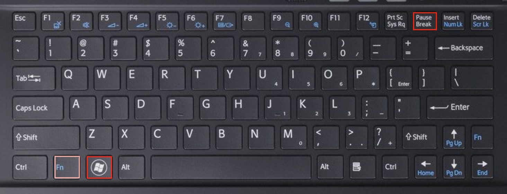
Es öffnet sich ein Fenster mit den grundlegenden Informationen über unseren Computer.

Ältere Windows-Versionen
Falls unser Betriebssystem nicht kompatibel ist, können wir hier ältere R-Versionen finden. Wir müssen jeweils auf die Version klicken und kommen dann auf eine Seite, die genau so aufgebaut ist wie die Seite der aktuellsten Version. Um zu erfahren, ob die Version mit unserem Betriebssystem kompatibel ist, müssen wir jeweils auf Does R run under my version of Windows? klicken. Wenn wir die passende Version gefunden haben, klicken wir auf Download R [Versionsnummer] for Windows. Die Versionsnummer ist abhängig davon, welche R Version tatsächlich mit unserem Betriebssystem kompatibel ist.Nach dem Herunterladen der .exe-Datei können wir diese öffnen. Es folgen einige Einstellungen und Zustimmungen, die wir uns kurz anschauen wollen.
Wir werden gefragt, ob wir Änderungen an unseren Gerät zulassen wollen und wir bejahen.
Dann können wir die Standardsprache für R einstellen. Diese kann man später auch im Programm noch ändern.
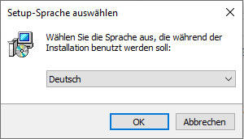
Achtung: Es kann hilfreich sein, Englisch als Sprache festzulegen. So würden wir Fehlermeldungen auf englisch ausgegeben bekommen, zu denen wir bei Suchen im Internet zumeist mehr finden.
Später können wir noch den Zielordner festlegen und auswählen, welche Komponenten installiert werden sollen. Normalerweise sollten alle wichtigen Komponenten automatisch ausgewählt sein. Wenn wir ein 64 bit-Betriebssystem haben, werden sowohl die 64- als auch die 32 bit-Version von R ausgewählt. Zweiteres können wir abwählen, damit wir das Programm nicht zweimal installieren.
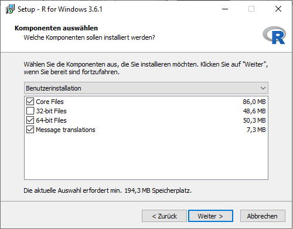
Nun werden wir gefragt, ob wir die Startoptionen von R ändern wollen. Wir können hier erstmal verneinen und diese später im Programm noch anpassen.
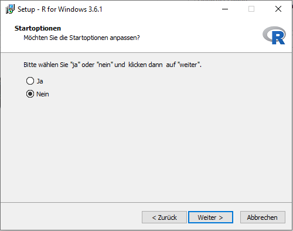
Was sind Startoptionen?
Bei den Startoptionen können wir z.B. einstellen, wie R später die Hilfe-Seiten einzelner Funktionen anzeigt. Da wir mit der Entwicklungsumgebung RStudio arbeiten werden, können wir diese Einstellungen einfach überspringen.Anschließend können wir den Startmenü-Ordner auswählen, d.h. festlegen, ob und wo Verknüpfungen zum Programm erstellt werden sollen. Da wir R später über RStudio aufrufen werden, können wir auch hier einfach mit der Voreinstellung auf Weiter drücken.

Nun können wir noch zusätzliche Aufgaben auswählen z.B. ob auf dem Startbildschirm eine Verknüpfung zum Programm erstellt werden soll.
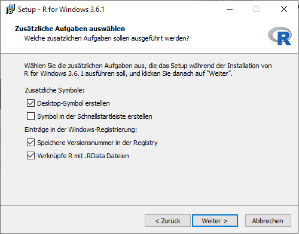
Danach müssen wir die Installation nur noch fertigstellen.
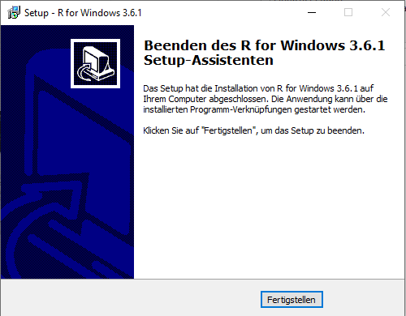
22.1.2 Installation von RStudio
Nachdem wir R heruntergeladen haben, können wir nun auch die Entwicklungsumgebung RStudio herunterladen.
Dazu gehen wir auf die RStudio-Seite und scrollen auf der Seite nach unten. Hier überprüfen wir, ob die uns empfohlene Version mit unserem Betriebssystem sowie unserer R-Version kompatibel ist. Wenn ja, können wir auf Download RStudio for Windows klicken.

Bei mir steht zwar Download RStudio Desktop, aber ich kann nicht darauf klicken.
In diesem Fall können wir auf der Seite weiter nach unten scrollen. Dort werden unter All Installers alle aktuellen Versionen von RStudio Desktop aufgeführt. Unter dem Eintrag OS sind alle Betriebssysteme aufgelistet, für die es die aktuellste RStudio Desktop Version gibt. Wenn wir unser Betriebssystem gefunden haben, wählen wir in der Spalte Download die passende RStudio Desktop Version aus und laden diese herunter.Was bedeutet “RStudio 1.2 requires a 64-bit operating system. If you are on a 32 bit system, you can use an older version of RStudio.”?
Ob wir die 32- oder die 64-bit Version von RStudio Desktop brauchen, hängt von unserem Computer ab. Für fast alle Computer können wir die 64-bit Version herunterladen. Sind wir uns nicht sicher, welche Version wir brauchen, können wir hier nachschauen. Wenn wir ein 32 bit-Betriebssystem haben, müssen wir eine ältere Version von RStudio Desktop herunterladen. Diese finden wir unter diesem Link.

Wir speichern die .exe-Datei und klicken dann auf diese. Wir müssen auch hier wieder zustimmen, dass Änderungen am System vorgenommen werden. Dann öffnet sich Fenster mit dem Installationsassistent.

Hier werden ähnliche Einstellungen wie bei der Installation von R besprochen. Abschließend klicken wir auch hier auf fertigstellen.
22.1.3 Aktualisierung von R mit Übernahme der Pakete aus der älteren Version (Paket installr)
Wenn eine aktuellere (für unser Betriebssystem kompatible) Version von R vorhanden ist, ist es ratsam, diese herunterzuladen. Mit Aktualisierungen werden etwaige Fehler und Sicherheitslücken behoben und ggf. neue Funktionen eines Programms implementiert.
Für Windows können wir zur Aktualisierung von R auf das Paket installr zurück greifen, welches den Prozess weitestgehend automatisiert.
Achtung: Wenn wir von einer älteren R -Version auf R 4.0.0 wechseln, müssen wir all unsere Pakete neu installieren. Das Verschieben dieser mit dem Paket installr funktioniert hier nicht.
Dazu installieren wir das Paket z.B. via install.packages("installr"). Nachdem wir das Paket mit library("installr") geladen haben, führen wir die enthaltene Funktion updateR() aus.
Wenn wir die aktuellste R-Version installiert haben, bekommen wir ein FALSE ausgegeben.
Wenn es eine aktuellere (kompatible) R-Version gibt, öffnet sich ein neues Fenster.

Wenn wir auf OK geklickt haben, werden wir gefragt, ob wir uns die Neuerungen dieser Version anschauen wollen (optional). Diese würden sich in einem neuen Tab im Browser öffnen.
Anschließend können wir die neuere Version installieren, indem wir auf Ja klicken.
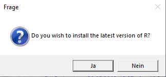
Wenn wir in RStudio sind, werden wir gefragt, ob wir die Installation via updateR() lieber in R ausführen wollen. Wir können die Installation aber auch einfach in RStudio fortführen.
Nun kommen die gleichen Einstellungen und Zustimmungen wie bei der Installation von R.
Nach Abschluss der Installation werden wir gefragt, ob wir die Pakete unserer alten R-Version in die neue übernehmen wollen …
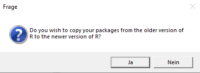
… und die Pakete aus den alten Ordnern löschen wollen. Hier können wir Ja anklicken, da wir nicht vorhaben, die alte R-Version noch zu nutzen (diese könnten wir also auch löschen).
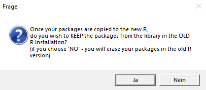
Wir können unsere Starteinstellungen für R (Rprofile.site) ebenso in die neuere Version übernehmen.
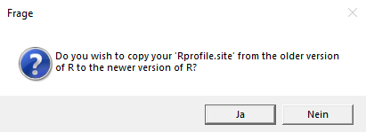
Abschließend werden wir sogar noch gefragt, ob wir unsere (verschobenen) Pakete aktualisieren wollen.
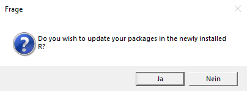
22.1.4 Aktualisierung von RStudio
Aktualisierungen für die Entwicklungsumgebung RStudio gibt es wesentlich seltener als für das dahinter liegende Basisprogramm R.
Zur Überprüfung, ob eine aktuellere Version vorliegt, können wir in RStudio auf Help –> Check for Updates klicken (in R gibt es diese Option nicht).

Wenn es eine aktuellere Version gibt, öffnet sich die RStudio-Seite im Browser.
Ich finde die Option Check for Updates nicht.
Manchmal gibt es die Option Check für Updates nicht im Help-Menü. Analog dazu können wir auch manuell unsere bestehende mit der aktuellsten RStudio-Version abgleichen. Dazu klicken wir in RStudio auf RStudio –> About RStudio …
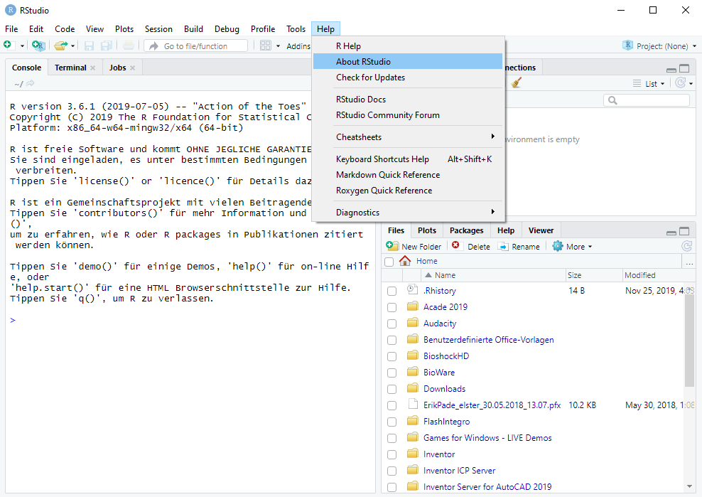
… so dass sich folgendes Fenster öffnet, in dem wir unsere bestehende RStudio-Version in Erfahrung bringen können.

Wir überprüfen, ob die uns empfohlene Version mit unserem Betriebssystem sowie unserer R-Version kompatibel ist. Wenn ja, können wir auf Download RStudio for Windows klicken.
Das weitere Vorgehen ist ebenso analog zur Installation von RStudio.
22.2 Mac
Die folgenden Installationen und Aktualisierungen wurden unter Nutzung von Safari 13.0.3 durchgeführt.
22.2.1 Installation von R
Unter folgendem Link unter Download R for (Mac) OS X finden wir die aktuellste R-Version ganz oben. Wir kommen dann auf die folgende Seite:
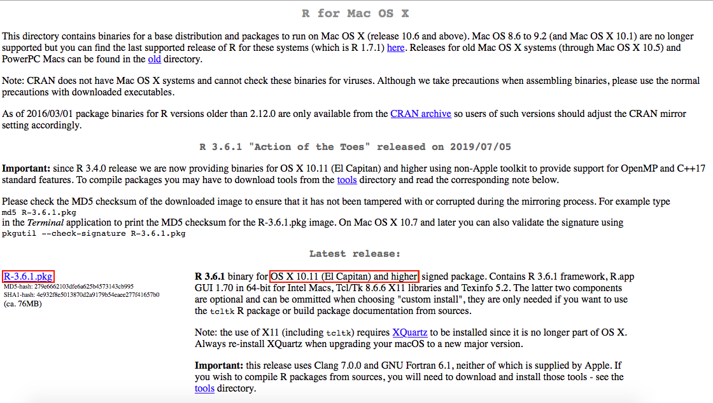
Achtung: Wir werden auf der Seite darauf hingewiesen, dass wir ab Mac OS X 10.9 (Mavericks) XQuartz nach jedem Upgrade der Betriebssoftware neu installieren sollten. Falls wir das noch nicht gemacht haben, sollten wir das vor der Installation von R noch tun.
Installation von XQuartz
Wir klicken auf die Verlinkung und gelangen auf die XQuartz-Seite.
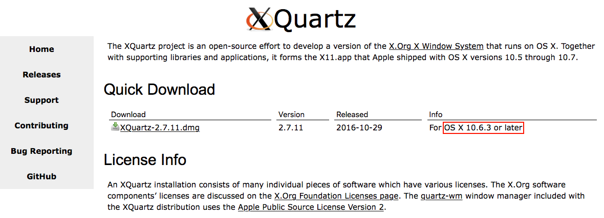
Zuerst schauen wir, ob die aktuelle XQuartz-Version mit unserem Betriebssystem kompatibel ist. Wenn das der Fall sein sollte, laden wir sie herunter. Anschließend klicken wir auf die .dmg-Datei und ein neues Fenster öffnet sich.

Wir klicken auf die .pkg-Datei. Dadurch öffnet sich das Installationsmenü.
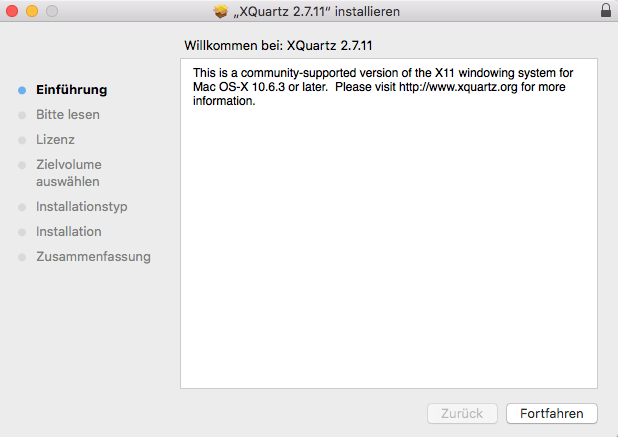
Wir klicken jeweils auf Fortfahren und stimmen dem Lizenzvertrag zu. Wir müssen den Änderungen an unserem System zustimmen, indem wir unser Benutzerpasswort eingeben. Anschließend ist die Installation abgeschlossen.
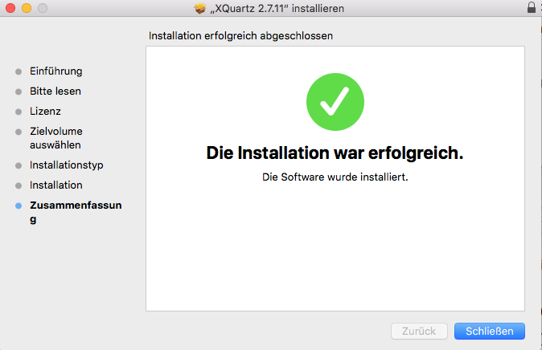
Nun müssen wir schauen, ob unser Betriebssystem den Mindestanforderungen für die aktuellste R Version entspricht. Wenn ja, können wir auf die .pkg-Datei klicken und den Download starten.
Wie finde ich meine Mac OS Version heraus?
Unsere Version des Betriebssystems bestimmt, welche Versionen von R und R Studio wir herunterladen können.
Wir finden unsere Betriebssystem-Version heraus, indem wir auf den Apfel in der Menüleiste am oberen Bildschirm und dann auf Über diesen Mac klicken.
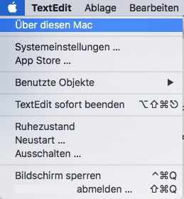
Daraufhin erscheint ein Fenster, in dem wir die Informationen ablesen können.
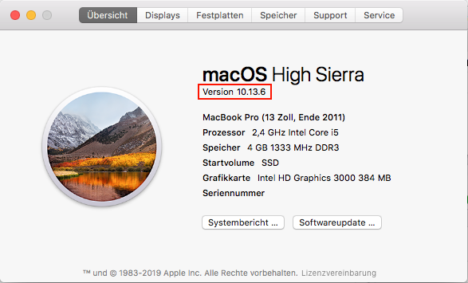
Falls die Mindestanforderungen nicht erfüllt sind, können wir trotzdem auf der gleichen Seite runterscrollen und nachschauen, ob eine ältere Version (für Mac OS X 10.9+ oder 10.6-10.8) vorliegt.
Wenn die .pkg- bzw. .dmg-Datei heruntergeladen wurde, klicken wir auf diese. Dann öffnet sich folgendes Fenster:

Nun müssen wir uns durchklicken und den Bedingungen zustimmen. Wenn die Installation erfolgreich war, erscheint folgendes Bild:
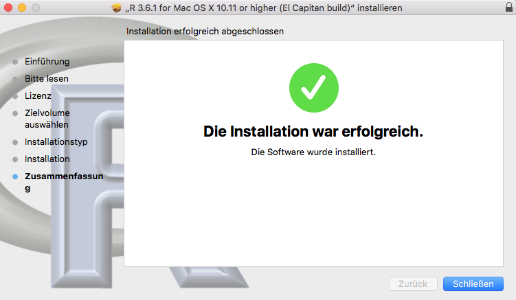
Die .pkg- bzw. .dmg-Datei(en) können wir nach der Installation löschen. .dmg-Dateien müssen vorher noch ausgeworfen werden. Wir finden diese bei Geräte im Finder.
22.2.2 Installation von RStudio
Nun können wir auf die RStudio-Seite gehen, nach unten scrollen und prüfen, ob die uns empfohlene Version mit unserem Betriebssystem sowie unserer R-Version kompatibel ist.

Wenn unser Betriebssystem älter ist, können wir hier eine ältere RStudio-Version herunterladen.
Ganz oben finden wir hier kompatible RStudio-Versionen für Mac OS X 10.11 (El Capitan) und ältere Betriebssystemversionen.

Wenn wir die für unser Betriebssystem kompatible Version heruntergeladen haben, können wir die .dmg-Datei öffnen und installieren. Um diesen Prozess abzuschließen, müssen wir das Programm in den Applications-Ordner verschieben.

Die .dmg-Datei können wir nach der Installation löschen. Vorher muss diese noch ausgeworfen werden. Wir finden die .dmg-Datei bei Geräte im Finder.
22.2.3 Aktualisierung von R
Wenn eine aktuellere (für unser Betriebssystem kompatible) Version von R vorhanden ist, ist es ratsam, diese herunterzuladen. Mit Aktualisierungen werden etwaige Fehler und Sicherheitslücken behoben und ggf. neue Funktionen eines Programms implementiert.
Zur Überprüfung, ob Aktualisierungen vorhanden sind, können wir in R oben in der Menüleiste auf R –> Nach R Updates suchen klicken (in RStudio gibt es diese Option nicht).

Entweder wir bekomen in der Konsole nun die Ausgabe, dass unsere Version aktuell ist …
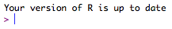
… oder in unserem Browser öffnet sich die Seite von CRAN, auf der wir die aktuellste Version von R herunterladen können.
Nun müssen wir noch überprüfen, ob die Mindestanforderungen an unser Betriebssystem erfüllt sind. Falls die Mindestanforderungen nicht erfüllt sind, können wir trotzdem auf der gleichen Seite runterscrollen und nachschauen, ob eine aktuellere als unsere derzeitige Version vorliegt.
Das weiterführende Vorgehen ist das Gleiche wie bei der initialen Installation von R: Wir laden die .pkg-Datei herunter, öffnen sie und führen die Installation aus.
Achtung: Aus unbekannten Gründen kann es vorkommen, dass uns über Nach R Updates suchen nicht mitgeteilt wird, dass unsere derzeitige Version nicht die aktuellste ist. Wir können auch analog unsere derzeitige mit der aktuellsten Version abgleichen.
Die Information über unsere derzeitige R-Version wird uns sowohl in R als auch in RStudio nach Öffnen des Programms ganz oben in der Konsole angezeigt.

Dann müssen wir diese nur noch mit der aktuellsten Version auf CRAN abgleichen.
22.2.3.1 Pakete aus der älteren in die neuere R-Version übernehmen
Achtung: Die nachfolgend beschriebene Verschiebung von Paketen ist nur notwendig, wenn sich die R-Version in der ersten Nachkommastelle ändert z.B. Version 3.5 zu 3.6. Bei kleineren Updates z.B. Version 3.6.0 zu 3.6.1 verändert sich der Pfad der Pakete nicht.
Achtung: Wenn wir von einer älteren R -Version auf R 4.0.0 wechseln, müssen wir all unsere Pakete neu installieren. Das manuelle Verschieben dieser mit dem nachfolgend vorgestellten Weg funktioniert hier nicht.
Wenn wir eine neuere R-Version heruntergeladen haben, sind unsere Pakete, die wir unter der vorherigen R-Version installiert haben, nicht mehr nutzbar im aktualisierten Programm. Das liegt daran, dass ein neuer Ordner für die aktuelle Version erstellt wurde, in den die Pakete nicht automatisch verschoben wurden.
Um unsere Pakete im aktualisierten Programm nutzen zu können, müssen wir diese in den neuen Ordner verschieben. Dazu öffnen wir den Finder und nutzen den Kurzbefehl shift + cmd + G, um die Dateipfadsuche zu öffnen. In dieser suchen wir den Pfad /Library/Frameworks/R.framework/Versions/.
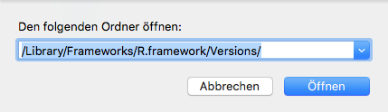
Wir bekommen nun die Ordner der verschiedenen R-Versionen angezeigt.

Wir machen nun einen Rechtsklick auf den Ordner der vorherig genutzten R-Version (hier: 3.5) und öffnen diesen in einem neuen Tab. Der Ordner enthält nur den Ordner Resources und dieser wiederum nur den Ordner library. Wen wir diesen öffnen, sehen wir die Ordner aller Pakete. Wir wählen schonmal alle Ordner an.

Nun gehen wir zurück auf den anderen Tab, in dem die Ordner der verschiedenen Versionen von R gelistet sind. Wir öffnen den Ordner der aktuellesten Version (hier: 3.6) und klicken auch hier auf den Ordner Resources und dann library.
Wir gehen jetzt zurück auf den anderen Tab (der älteren R-Version) und ziehen die Pakete in den library-Ordner der neuen R-Version.
Achtung: Wenn Paket-Ordner doppelt vorliegen, dann werden wir gefragt, ob wir diese ersetzen wollen. Wir sollten verneinen, da wir ansonsten Probleme mit der Nutzung der alten Standard-Pakete in der neuen R-Version bekommen könnten.
Tipp: Nach der Aktualisierung von R können wir mit großer Wahrscheinlichkeit auch einige Pakete aktualisieren. Für Hilfe dabei können wir uns das gleichnamige Kapitel anschauen.
22.2.4 Aktualisierung von RStudio
Aktualisierungen für die Entwicklungsumgebung RStudio gibt es wesentlich seltener als für das dahinter liegende Basisprogramm R.
Zur Überprüfung, ob eine aktuellere Version vorliegt, können wir in RStudio auf Help –> Check for Updates klicken (in R gibt es diese Option nicht).
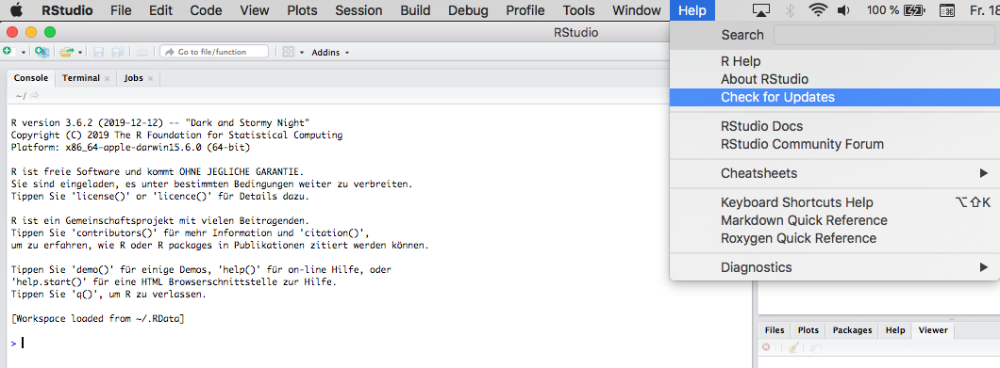
Wenn es eine aktuellere Version gibt, öffnet sich die RStudio-Seite im Browser.
Ich finde die Option Check for Updates nicht.
Manchmal gibt es die Option Check für Updates nicht im Help-Menü. Analog dazu können wir auch manuell unsere bestehende mit der aktuellsten RStudio-Version abgleichen. Dazu klicken wir in RStudio auf RStudio –> About RStudio …
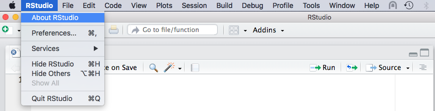
… so dass sich folgendes Fenster öffnet, in dem wir unsere bestehende RStudio-Version in Erfahrung bringen können.

Wenn unsere Version nicht mehr aktuell ist, überprüfen wir, ob die uns empfohlene Version mit unserem Betriebssystem sowie unserer R-Version kompatibel ist.
Das weitere Vorgehen ist weitestgehend deckungsgleich mit dem der initialen Installation von RStudio. Einziger Unterschied ist, dass wir die ältere durch die neuere RStudio-Version ersetzen.

22.3 Hinweis zur Replizierbarkeit von Analysen
Wir sollten bei Analysen in R immer berichten, in welcher Version unser Betriebssystem, R und unsere genutzten Pakete vorliegen. Sonst kann die Replikation unserer Ergebnisse Anderen schwer fallen, z.B. weil die Funktionen sich in ihrer Berechnung oder Funktionsweise zwischen verschiedenen Versionen von Paketen unterscheiden können. Mit der Funktion sessionInfo() bekommen wir all diese Informationen auf einen Schlag.
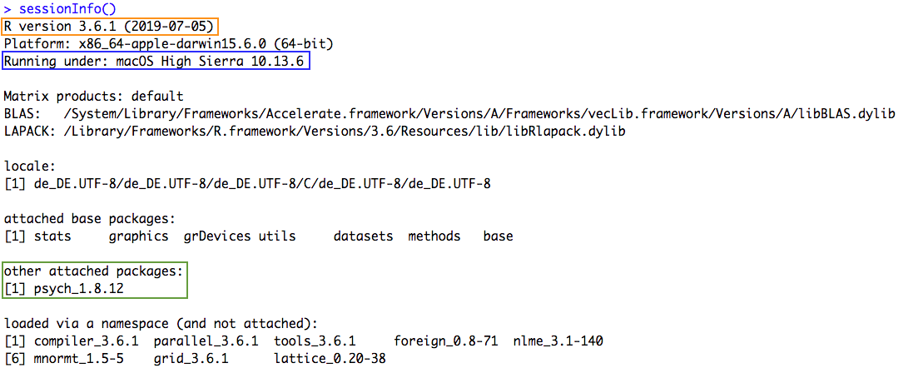